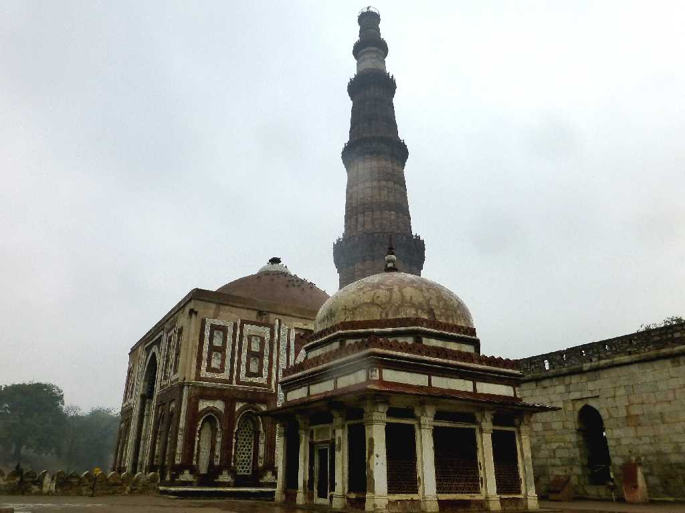
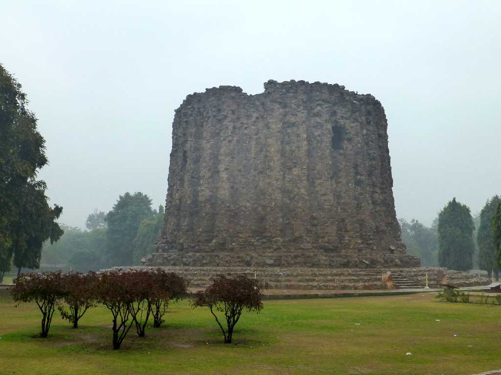
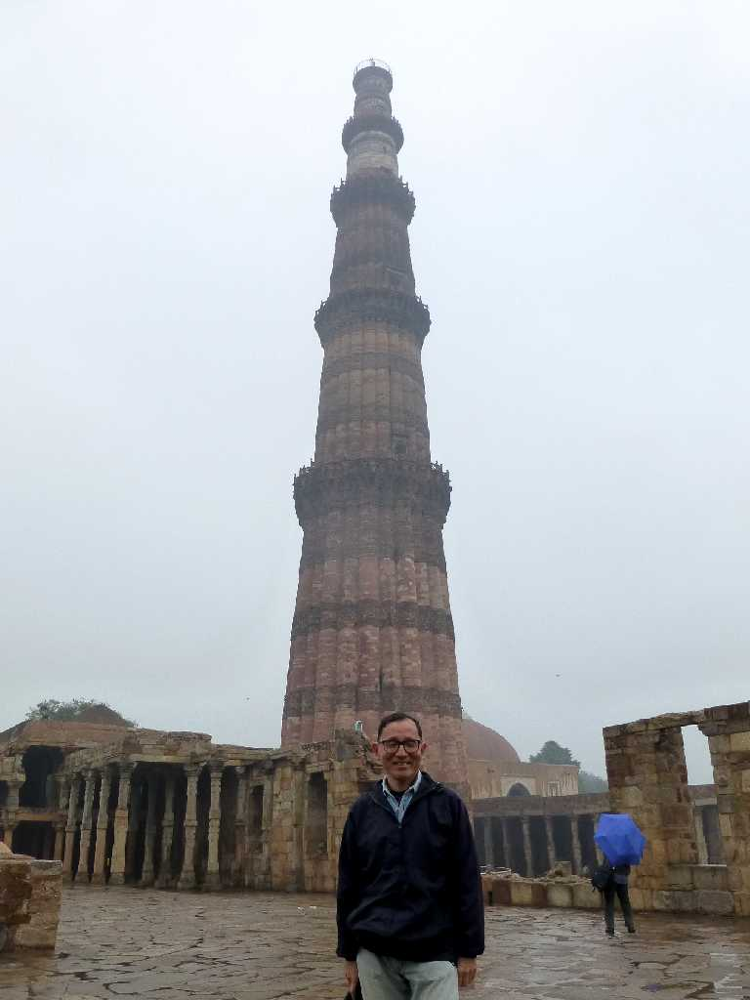
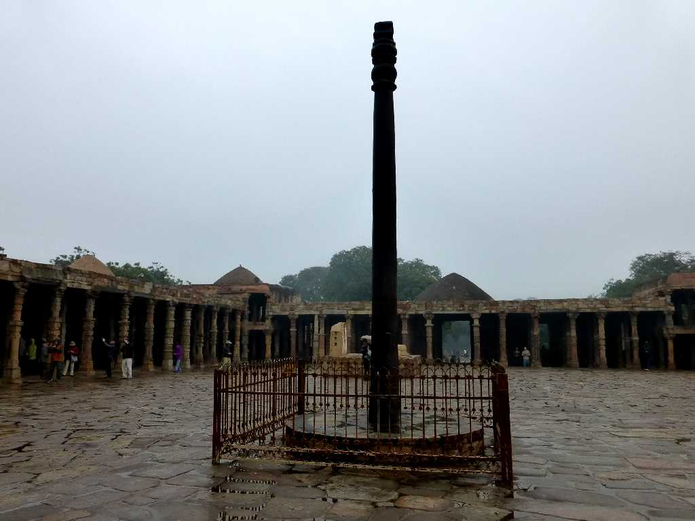

August 1985 Qutub Minar Delhi
奴隷王朝時代の１１９９年にクトブッティンアイバク王が建造した高さ７２.5mのインドに現存する最も高い石造りの塔

Qutub Minar Alai Darwaza Imam Zamin
約３０年ぶりの再訪問で雨のクトゥブミナールでした

Alai Minar
財政難により未完成となったアライミナールは完成すれば１００ｍを超えるミナールと考えられている

January 26 2015 Qutub Minar

Iron Pillar
４世紀にアショーカ王が創った錆びない鉄柱で純度９９,72％高さ１０ｍ重さ１０ｔある